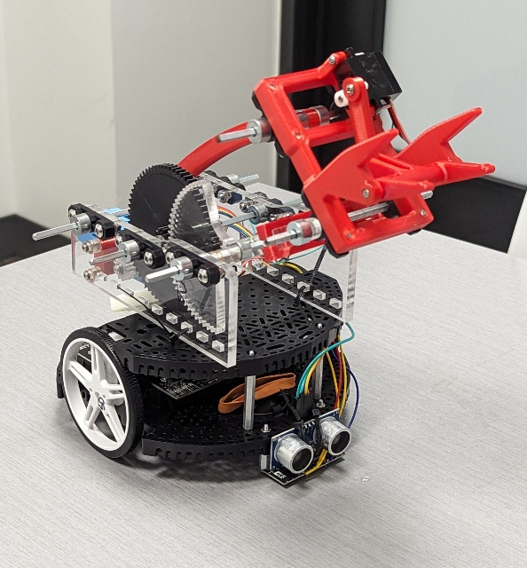

About Me
My name is John Hall, and I am a graduate student at Worcester Polytechnic Institute studying Robotics Engineering. I have experience developing automated solutions in both work and school environments. I love collaborating in teams and am enthusiastic about all things robotics.
Learn More
Work Experience
I am currently interning at PAR Systems and conducting research in Prof. Pittiglio's FuTURE Lab at WPI.

School Projects
Hands on projects at WPI have taught me many technical skills along with working closely on a team.
